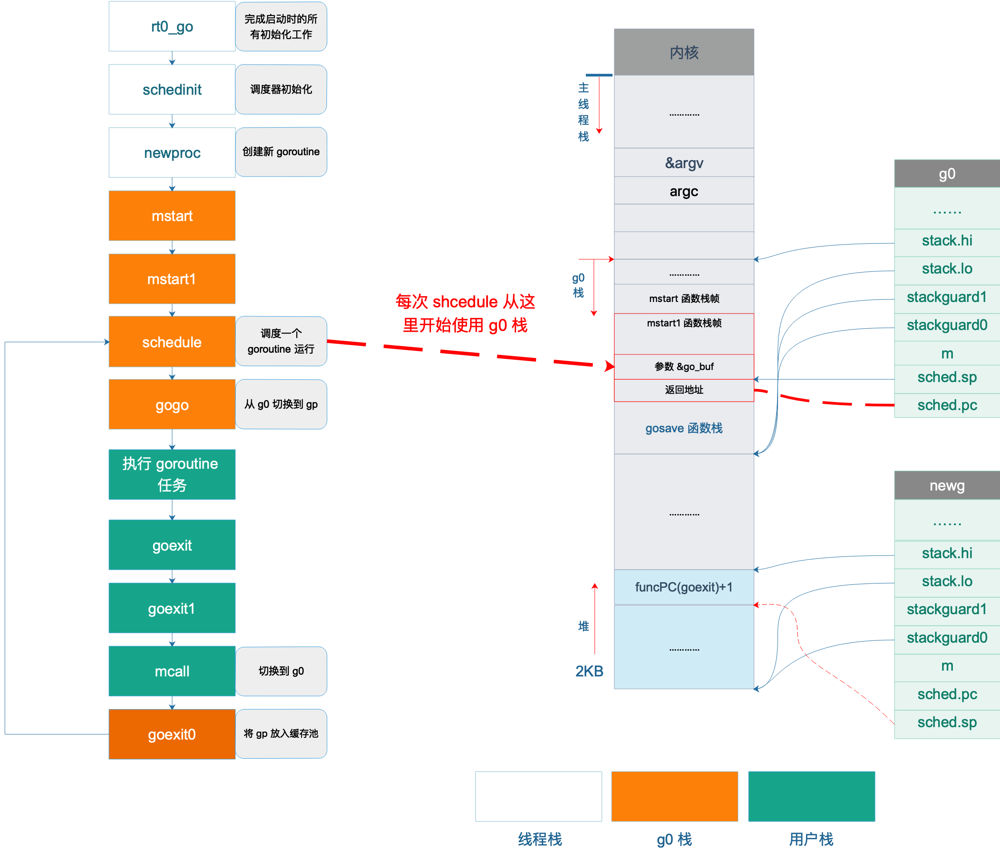

上一节，我们讲完 main goroutine 以及普通 goroutine 的退出过程。main goroutine 退出后直接调用 exit(0) 使得整个进程退出，而普通 goroutine 退出后，则进行了一系列的调用，最终又切到 g0 栈，执行 schedule 函数。
从前面的文章我们知道，普通 goroutine（gp）就是在 schedule 函数中被选中，然后才有机会执行。而现在，gp 执行完之后，再次进入 schedule 函数，形成一个循环。这个循环太长了，我们有必要再重新梳理一下。

如图所示，rt0_go 负责 Go 程序启动的所有初始化，中间进行了很多初始化工作，调用 mstart 之前，已经切换到了 g0 栈，图中不同色块表示使用不同的栈空间。
接着调用 gogo 函数，完成从 g0 栈到用户 goroutine 栈的切换，包括 main goroutine 和普通 goroutine。
之后，执行 main 函数或者用户自定义的 goroutine 任务。
执行完成后，main goroutine 直接调用 eixt(0) 退出，普通 goroutine 则调用 goexit -> goexit1 -> mcall，完成普通 goroutine 退出后的清理工作，然后切换到 g0 栈，调用 goexit0 函数，将普通 goroutine 添加到缓存池中，再调用 schedule 函数进行新一轮的调度。
|
|
可以看出，一轮调度从调用 schedule 函数开始，经过一系列过程再次调用 schedule 函数来进行新一轮的调度，从一轮调度到新一轮调度的过程称之为一个调度循环。
这里说的调度循环是指某一个工作线程的调度循环，而同一个Go 程序中存在多个工作线程，每个工作线程都在进行着自己的调度循环。
从前面的代码分析可以得知，上面调度循环中的每一个函数调用都没有返回，虽然
goroutine 任务-> goexit() -> goexit1() -> mcall()是在 g2 的栈空间执行的，但剩下的函数都是在 g0 的栈空间执行的。
那么问题就来了，在一个复杂的程序中，调度可能会进行无数次循环，也就是说会进行无数次没有返回的函数调用，大家都知道，每调用一次函数都会消耗一定的栈空间，而如果一直这样无返回的调用下去无论 g0 有多少栈空间终究是会耗尽的，那么这里是不是有问题？其实没有问题！关键点就在于，每次执行 mcall 切换到 g0 栈时都是切换到 g0.sched.sp 所指的固定位置，这之所以行得通，正是因为从 schedule 函数开始之后的一系列函数永远都不会返回，所以重用这些函数上一轮调度时所使用过的栈内存是没有问题的。
我再解释一下：栈空间在调用函数时会自动“增大”，而函数返回时，会自动“减小”，这里的增大和减小是指栈顶指针 SP 的变化。上述这些函数都没有返回，说明调用者不需要用到被调用者的返回值，有点像“尾递归”。
因为 g0 一直没有动过，所有它之前保存的 sp 还能继续使用。每一次调度循环都会覆盖上一次调度循环的栈数据，完美！
参考资料 #
【阿波张 非 main goroutine 的退出及调度循环】https://mp.weixin.qq.com/s/XttP9q7-PO7VXhskaBzGqA